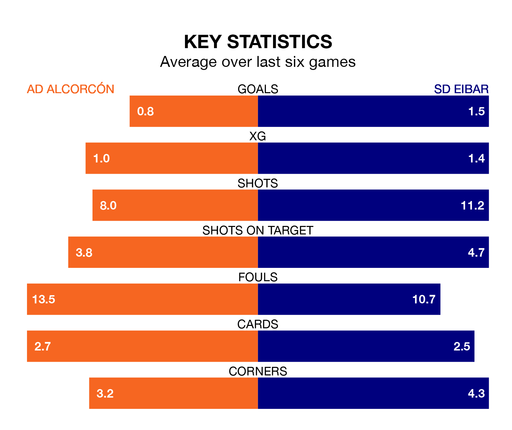

SD Eibar are strong favourites to take all three points despite AD Alcorcón's home advantage in Sunday lunchtime's match at the Estadio Santo Domingo.
*Betting Company* are offering odds of 1.85 on Eibar sealing the win, with the visitors sitting fifth in the Segunda División table.
Alcorcón, who are 22nd in the league and 17 points behind SD Eibar, are priced at 4.33 to win. A draw is set at 3.4.
With 33 goals in 19 games so far this season, Eibar are the league's highest scorers with 1.7 goals per game. But they are conceding more than average too, letting in 25 goals at a rate of 1.3 per game.
Alcorcón, meanwhile, are below average scorers, with 0.8 goals per game, compared to a league average of 1.2. They have conceded 1.7 goals per game.
AD Alcorcón are in bad form in the Segunda División, with one win and a draw from their last six games.
With a win and three draws over that period, SD Eibar's form is slightly better – they have taken six points from 18, compared to the home side's four.
In Juan Carlos Arana Gómez, Jon Bautista Orgilles and Juan Diego Molina Martínez, the visitors have three of the league's most on-form strikers so far this season. They have notched seven goals each, to sit seventh in the scoring charts.
Alcorcón's top scorer, with four goals in 12 games, is Dyego Sousa.
Alcorcón's last match was on Monday, a 1-0 loss against CD Tenerife.
Eibar drew 2-2 with FC Andorra last time out, on Sunday, with Molina Martínez and Sergi Samper (own goal) on the scoresheet.
